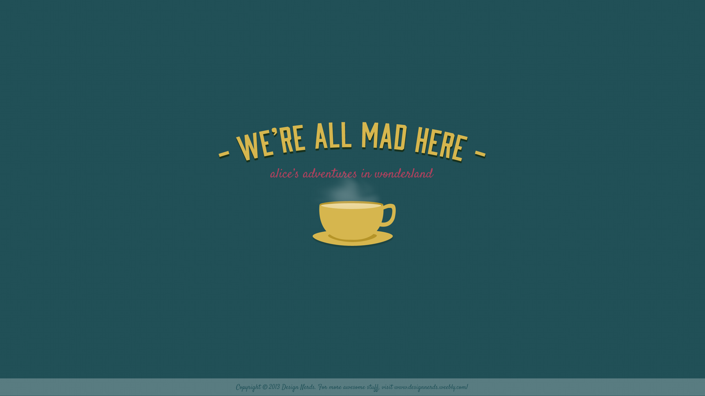

Blog Post 1
Kimberly 30 of September 2023
This will be used to check the various text skills so dummy text will go here He wondered if he should disclose the truth to his friends. It would be a risky move. Yes, the truth would make things a lot easier if they all stayed on the same page, but the truth might fracture the group leaving everything in even more of a mess than it was not telling the truth. It was time to decide which way to go.
What were the chances? It would have to be a lot more than 100 to 1. It was likely even more than 1,000 to 1. The more he thought about it, the odds of it happening had to be more than 10,000 to 1 and even 100,000 to 1. People often threw around the chances of something happening as being 1,000,000 to 1 as an exaggeration of an unlikely event, but he could see that they may actually be accurate in this situation. Whatever the odds of it happening, he knew they were big. What he didn't know was whether this happening was lucky or unlucky.